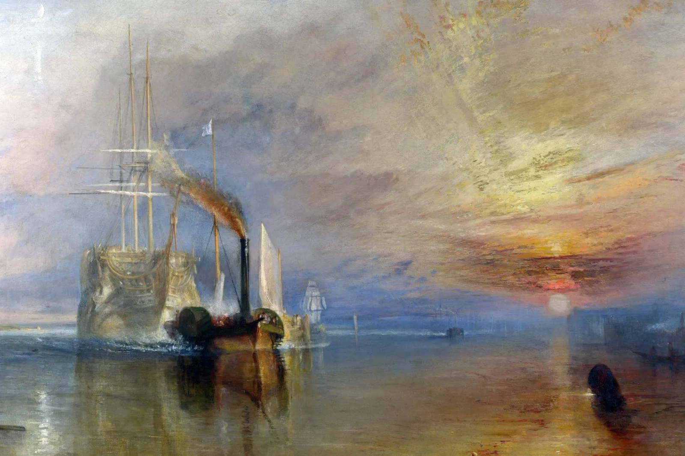

📚 文學與戲劇
英格蘭被譽為文學巨匠的搖籃。威廉·莎士比亞的戲劇，到珍·奧斯汀的小說，再到JK羅琳， 英國文學的影響力橫跨數百年。
想了解更多，可以點擊我們的 莎士比亞名言區， 或參觀大英圖書館的 官方網站 (外部連結)。
經典文學推薦
🌐 世界文化內容
以下為大英博物館的官方網站，讓您一窺英格蘭的文化寶藏：
🧪 文化展示
英格蘭文化主題
君主制是英國文化的核心，象徵著國家的統一與延續。
英格蘭人注重禮貌和排隊的習慣，是其文化的重要特徵。

從透納 (Turner) 到現代藝術，英國藝術在全球佔有一席之地。
認識程度條
文化認同度: 0%
您喜歡英格蘭的哪種傳統？
📜 莎士比亞名言
“All the world's a stage, and all the men and women merely players.”
— 威廉·莎士比亞 (William Shakespeare)